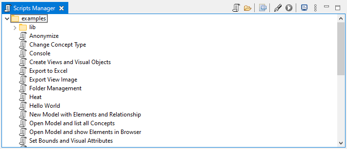

The Scripts Manager is used to create and manage scripts and other files. You can add new folders and files in the Scripts Manager as well as organising them with drag and drop. You can drag and drop files from the desktop to the Scripts Manager with the option to either copy them or link to them.
jArchi scripts and folders are shown in the right-click context menu when selecting objects in Archi's Models Tree and Views. Script folders can be hidden in the context menus by selecting the folder in the Scripts Manager, right-clicking, and selecting "Don't show in context menus". This can be reversed by selecting the folder in the Scripts Manager, right-clicking, and selecting "Show in context menus".
